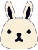
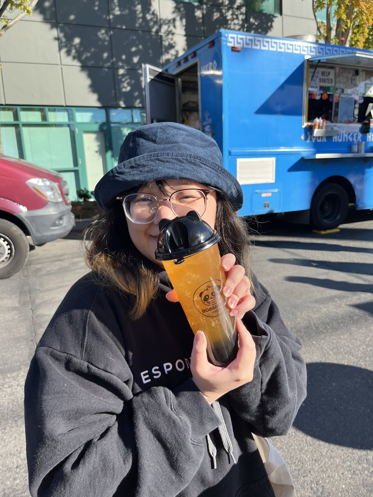
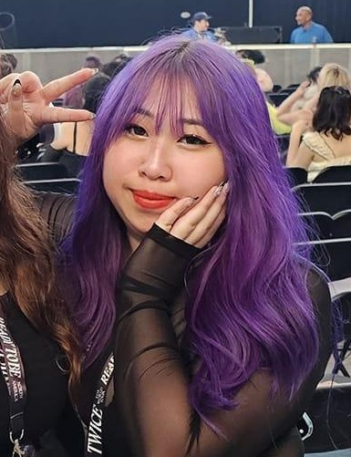

{% extends 'feedprofilebase.html' %}
{% block title %}Bunbook Artist Credits!{% endblock %}
{% block content %}
 Meet the Artist!
Thanks my great 10/10 friend Monica for helping create
the beautiful logos, mascot and background for Bunbook!
You can view her work here!

Meet the Developer!
My name is Mellody and I love bunnies (surprise).
Jokes aside, making Bunbook was a lot of work but so fun.
As someone who's has used Twitter, Tumblr, Instagram and Threads
it was so awesome to see all the work that goes into building
a social media app.
I definitely look forward to building on this project and eventually even deploying it.
I hope you enjoyed my little easter egg and Bunbook!!
You can find me on LinkedIn Here.

{% endblock %}